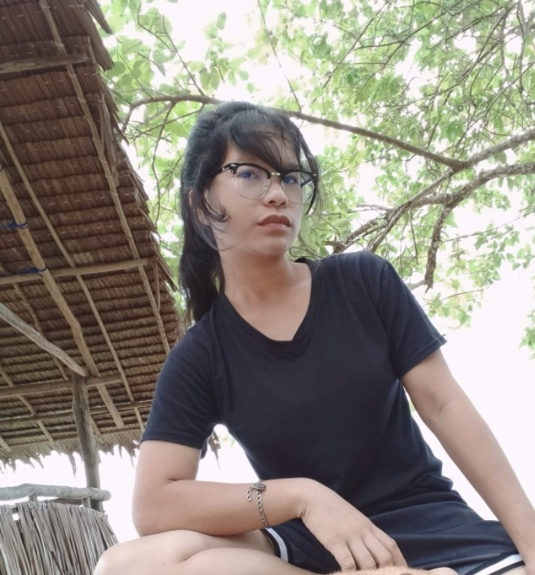

|  | Mariza S. Kiram Call Centre Specialist linkedin.com/in/marizakiram-0975-727-1600-marizakiram@gmail.com __________________________________________________________ |
| Summary | Cheeful call center specialist with 7+ years of experience. Seeking to use high-level telesales and customer support skills to deliever sales excellence at Verizon. Awarded Gold-Star status at ABC Call Center for spurring a team of 10 to 25% more sales and 50% more dials over previous year. |
| Experience | Call Center Agent & Peer Mentor Contact ABC Call Center 2012-2018
Attainable Health & wellness, Inc. 2010-2012
|
| Education | BS Information Technology
Palawan State University (main) 2018 |
| Skills | Inbound & Outbound Call Handling, Customer Support, Telescales, complaint Resolution. |
| Courses | Working With Tough Customers--ICMI--2017 Service and Sales--ICMI--2014 |